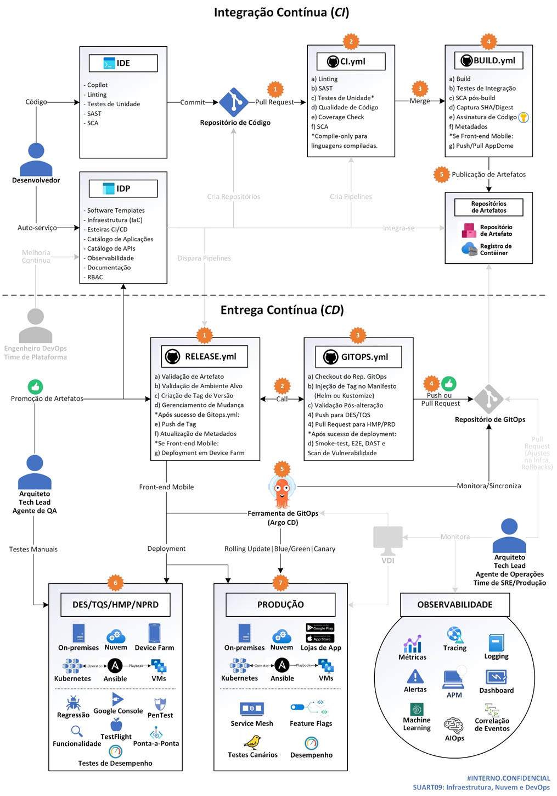

MODELO ÚNICO DE DEVOPS, GITOPS E ESTEIRAS CORPORATIVAS CI/CD: NUVEM, MOBILE E ON-PREMISES
1. Identificação
1.1. Esta arquitetura define um único modelo de DevOps e de Esteiras Corporativas CI/CD tanto para aplicações modernas quanto para aplicações “legado”, independentemente de sua hospedagem em máquinas virtuais (VMs) ou em cluster de Kubernetes, ou independentemente de sua hospedagem em ambientes de nuvem pública, nuvem híbrida, nuvem privada, on-premises ou em lojas de aplicativos.
1.2. Sobretudo, esta arquitetura considera o trabalho desenvolvido pelo CoE de DevSecOps: a criação do IDP Caixa e as novas Esteiras Corporativas CI/CD, e define um modelo capaz de contemplar a imensa maioria das aplicações CAIXA.
1.3. Esta arquitetura de referência também trata de mitigar as fragilidades relacionadas a ausência de estratégia para adequação das aplicações “legado”, hospedados em VMs — e que utilizam esteiras CI/CD obsoletas — com a realidade e o padrão das modernas, preparadas para ambientes de Kubernetes.
2. Objetivos
2.1. Padronizar o fluxo e as ferramentas de DevOps e CI/CD, a fim de modernizar o fluxo de entrega das aplicações CAIXA, e a fim de reduzir a complexidade, viabilizar a reutilização de workflows e templates, e simplificar a experiência dos desenvolvedores de software.
2.2. Definir um modelo de esteira CI/CD que garanta padrões de governança, qualidade e segurança de código, práticas modernas de mercado e agilidade de implantação (deployment).
2.3. Oferecer um modelo de esteira CI/CD que, ao mesmo tempo em que garanta padrões de governança, permita e promova a autonomia das equipes de desenvolvimento.
2.4. Aumentar a frequência de implantação e a velocidade de resposta das equipes de desenvolvimento às demandas de compliance, governo e mercado.
2.5. Reduzir o tempo entre a concepção de uma mudança no software e sua disponibilização aos usuários finais (lead time e time to market).
2.6. Reduzir a taxa de falhas e os incidentes nas mudanças implantadas.
2.7. Reduzir o tempo de detecção e recuperação de falhas (MTTD e MTTR).
3. Conceitos
3.1. Esteiras CI/CD (Continuous Integration/Continuous Delivery)
3.2. Uma esteira CI/CD é um conjunto automatizado de processos e ferramentas que permite a integração e a entrega contínua de software.
3.3. Essa esteira define o fluxo de desenvolvimento de software, desde a criação do código até a sua implantação em ambiente de produção.
3.4. A esteira contém esteiras menores, ou pipelines, que incluem etapas como compilação, testes automatizados, validações de segurança, publicação em repositório, aprovações manuais e implantação.
3.5. Essas características garantem que cada mudança no código seja verificada e entregue de forma segura e eficiente, reduzindo falhas e retrabalho.
3.6. Ao adotar uma esteira CI/CD, as equipes constroem software de maneira mais ágil e com maior qualidade e confiabilidade. Isso possibilita inovação frequente e constante entrega de valor.
3.7. IDP – Internal Developer Portal (Portal Interno do Desenvolvedor)
3.8. O Gartner define IDP, ou Portal Interno do Desenvolvedor, como uma interface que fornece autoatendimento, automação, ferramentas, acesso a componentes reutilizáveis, serviços de plataforma e ativos de conhecimento (GARTNER, 2025).
3.9. O IDP centraliza informações e processos para facilitar o desenvolvimento de software. E ajuda a garantir que todas as equipes sigam as mesmas diretrizes de governança, desenvolvimento e infraestrutura.
3.10. O IDP permite que desenvolvedores, sem depender de outras equipes, acessem e provisionem serviços, APIs, infraestrutura, scaffolders, esteiras CI/CD e outras funcionalidades.
3.11. O Gartner prevê que, até 2025, 75% das organizações com equipes de plataforma fornecerão portais internos, visando aprimorar a experiência do desenvolvedor e acelerar a inovação de produtos (GARTNER, 2022).
3.12. GitOps
3.13. GitOps é um padrão de gestão de sistemas e infraestrutura que obedece aos seguintes princípios:
• Declarativo: o estado desejado do sistema deve ser expresso de modo declarativo.
• Versionado e Imutável: a infraestrutura e as configurações são declaradas em arquivos versionados. Os arquivos são armazenados de uma forma que garante imutabilidade e rastreabilidade de mudanças.
• Pull Automático: um software agente monitora a fonte que contém o estado desejado.
• Reconciliação Contínua: o software agente monitora o estado atual do sistema e, se divergente, aplica o estado desejado (OPENGITOPS, 2025).
3.14. No contexto de esteiras CI/CD, o padrão GitOps utiliza um repositório Git (chamado de Repositório de GitOps ou Repositório de Infra-Config) para armazenar arquivos declarativos (ex.: manifestos de Kubernetes, Helm charts, Kustomize YAMLs) que definem o estado desejado do sistema.
3.15. Quando uma pipeline atualiza um arquivo neste repositório Git (ex.: inclusão da tag da nova versão da imagem de contêiner), um software agente (também chamado de Ferramenta de GitOps) detecta a mudança e, automaticamente, implementa-a no cluster que hospeda a aplicação.
3.16. Sempre que há uma diferença entre o estado no Git e o estado no cluster, a Ferramenta de GitOps aplica as mudanças, garantindo a reconciliação.
3.17. Se houver uma alteração manual no cluster (ex.: um desenvolvedor altera a quantidade de pods via “kubectl”), a Ferramenta de GitOps detectará a divergência entre os estados e, por padrão, automaticamente, implantará a quantidade de pods correta, conforme o estado desejado armazenado no Git.
3.18. Significa dizer que, no padrão GitOps, o repositório Git é a única fonte de verdade para definir e gerenciar o estado de um sistema.
3.19. Essa característica garante os seguintes benefícios:
• Rastreabilidade e auditoria: apenas as mudanças aprovadas e versionadas no Git são aplicadas, o que facilita a compreensão do histórico, viabiliza o controle e evita alterações não autorizadas.
• Automação e confiabilidade: todas as mudanças são implantadas automaticamente pela Ferramenta de GitOps, o que agiliza os deployments e reduz os erros manuais.
• Desenvolvimento e rollback ágeis: implantação contínua de código e infraestrutura, e, se algo der errado, reverte-se a alteração no Git para o sistema retornar ao estado anterior.
• Consistência entre os ambientes: mudanças são propagadas de forma padronizada entre diferentes ambientes (DEV, TQS, HMP, PRD etc.).
4. Tecnologias (componentes desta arquitetura)
4.1. GitHub Actions (Execução de Esteiras CI/CD)
4.2. O GitHub Actions é uma ferramenta da plataforma GitHub que permite automatizar, personalizar e executar fluxos de trabalho de desenvolvimento de software diretamente no repositório Git (GITHUB, 2025).
4.3. Com o GitHub Actions é possível estabelecer uma esteira CI/CD automatizada e baseada em eventos, como push, pull request, testes, builds, deployments e outras tarefas repetitivas. Tudo isso de forma integrada ao ciclo de vida do projeto.
4.4. Apesar de outras ferramentas (Jenkins, CircleCI, Azure DevOps etc.) também possuírem essas funcionalidades, o diferencial do GitHub Actions é a sua integração nativa com os repositórios do GitHub, o que oferece uma experiência mais fluida, familiar e simplificada para os projetos e desenvolvedores da CAIXA.
4.5. Além disso, desde que a Microsoft lançou o GitHub Actions após a aquisição da plataforma GitHub, o produto vem recebendo novas features e integrações com ferramentas corporativas e open source.
4.6. Por possuir um roadmap robusto, integração nativa com o GitHub e por ter se consolidado como uma das principais ferramentas de DevOps da Microsoft, o GitHub Actions é a ferramenta de CI/CD adotada nesta arquitetura de referência.
4.7. Situação atual (as is): coexistência de esteiras “legado” em Jenkins e em outras ferramentas, esteiras em Azure DevOps e esteiras em GitHub Actions.
4.8. Situação alvo (to be): adequação e migração de todas as esteiras para o GitHub Actions, no padrão estabelecido pelo IDP Caixa e CoE de DevSecOps.
4.9. Argo CD (Ferramenta de GitOps e Automação de Deployment)
4.10. O Argo CD é uma ferramenta de continuous delivery baseada em princípios de GitOps. Seu uso correto garante o padrão GitOps e automatiza a implantação de aplicações (deployment), simplificando a pipeline de CD.
4.11. O Argo CD sincroniza o estado atual do cluster de Kubernetes com o estado desejado do sistema, definido em arquivos declarativos num repositório Git (chamado de Repositório de GitOps ou Repositório de Infra-Config).
4.12. Dessa forma, o Argo CD garante que as aplicações sob seu monitoramento estejam sempre alinhadas às configurações versionadas no Git, o que possibilita consistência e rastreabilidade.
4.13. Se houver falhas na nova versão, um commit e pull request podem ser realizados para alterar a versão no repositório Git, e o Argo CD automaticamente fará o deployment da versão estável.
4.14. Com base em monitoramento de falhas em produção, esse rollback pode ser automatizado por uma pipeline (ex.: a ferramenta de observabilidade detecta um tipo de erro e dispara via webhook uma pipeline no GitHub Actions, a qual faz um pull request da versão anterior no Repositório de GitOps, e o Argo CD aplica a mudança no cluster).
4.15. Por facilitar o rollback e automatizar o deployment, o Argo CD tornou-se um padrão de continuous delivery baseado em GitOps para ambientes de nuvem (CNCF, 2025).
4.16. O Argo CD possibilita uma alta frequência de deployment para entregas rápidas de novas funcionalidades e atualizações, reduzindo o tempo entre a concepção de uma mudança no software e sua disponibilização aos usuários finais (lead time), e também reduzindo o tempo médio de recuperação de falhas (MTTR), garantindo que os usuários finais estejam satisfeitos e seguros (CNCF, 2025).
4.17. Situação atual (as is): ausência do padrão GitOps, deployments manuais ou execução de scripts de deployments em esteiras de Jenkins e Azure DevOps.Em aplicações que já migraram para o IDP Caixa: uso do Argo CD para garantir GitOps e automatizar deployments.
4.18. Situação alvo (to be): padronizar para todas as aplicações corporativas o Argo CD como ferramenta de GitOps e automação de deployments. Utilização de versão open source e preferencialmente de versão suportada, conforme a disponibilidade nos ambientes CAIXA.
4.19. O Argo CD é uma ferramenta open source, considerada segura pelo Cloud Native Computing Foundation e amplamente utilizada no mercado. Contudo algumas empresas criaram produtos que ofertam o Argo CD dentro de uma proposta comercial ampla e suportada, como é o caso do Red Hat Openshift, ou como o Microsoft Azure AKS e o Azure Arc-enabled Kubernetes, que oferecem, por ora em versão prévia, o Argo CD como extensão de cluster.
4.20. A necessidade de um Argo CD suportado, de licenças do Red Hat Openshift para esse fim ou da utilização do Argo CD via Microsoft Azure será avaliada conforme os testes executados pelo CoE de DevSecOps e pelo processo descrito no TE097 – Prospecção de Recursos Tecnológicos.
4.21. Ansible
4.22. Embora o Argo CD seja projetado especificamente para Kubernetes, ele pode ser utilizado em conjunto do Ansible no intuito de garantir princípios modernos de DevOps e GitOps para aplicações implantadas em máquinas virtuais (VMs).
4.23. Nesse cenário, utiliza-se os CRDs (custom resource definitions), uma funcionalidade do Kubernetes que permite que um novo recurso definido num arquivo YAML seja reconhecido como se fosse nativo.
4.24. Assim, CRDs armazenados em conjunto dos manifestos no Repositório de GitOps descrevem recursos que representam VMs (VMDeployment) e suas configurações (spec, host, playbook etc.). O Argo CD monitora esse repositório e, quando há alteração, implanta os metadados das VMs no cluster de Kubernetes.
4.25. Um Ansbile Operator, instalado dentro de um pod, detecta os metadados e executa o playbook correspondente na VM remota, realizando o deployment, aplicando as configurações e verificando o estado dos serviços. Tudo conforme o que está declarado no repositório de GitOps monitorado pelo Argo CD.
4.26. Essa abordagem permite que aplicações do “legado”, hospedadas em VMs, possam ser beneficiadas pelo padrão GitOps e pela automação de esteiras corporativas de CI/CD.
4.27. Situação atual (as is): dificuldade de integrar aplicações hospedadas em VMs a um modelo moderno de DevOps e esteiras CI/CD. Aplicações “legado” em Jenkins ou ferramentas anteriores. Aplicações hospedadas em servidores JBoss/WildFly anteriores a versão 6, incompatíveis com um fluxo de CI/CD. Pouca automação.
4.28. Situação alvo (to be): descontinuar o uso de Jenkins e de ferramentas de CI/CD não padronizadas. Migrar essas esteiras para Azure DevOps, no padrão do CoE de DevSecOps, e em seguidas convertê-las em esteiras de GitHub Actions por meio do IDP Caixa. Refatorar, quando possível, aplicações monolíticas para arquitetura baseada em microsserviços e hospedagem em cluster de Kubernetes. Modernizar aplicações hospedadas em antigos servidores JBoss/WildFly para versões mais atuais, compatíveis com um fluxo CI/CD. Utilizar o Ansible como ferramenta de automação nos cenários que envolvem deployments em VMs.
4.29. Tal como o Argo CD, o Ansible é uma ferramenta open source amplamente utilizada no mercado. Contudo algumas empresas criaram produtos que ofertam o Ansible dentro de uma proposta comercial ampla e suportada, como é o caso do Red Hat Ansible Automation Platform, produto não contratado pela CAIXA e atualmente em regime de comodato, com testes sendo realizados pela CESTI.
4.30. A avaliação da necessidade e prospecção do Red Hat Ansible Automation Platform, ou ferramenta similar, é crítica para a execução desta arquitetura de referência e deve ser realizada conforme o processo descrito no TE097 – Prospecção de Recursos Tecnológicos.
5. Arquitetura em descontinuidade
5.1. Para execução de esteiras corporativas CI/CD, a arquitetura publicada anteriormente previa o uso do Azure DevOps Services (ADS Nuvem) para aplicações iOS, e do Azure DevOps Server (ADS on-premises) para as demais aplicações.
5.2. A arquitetura não considerava a existência de um IDP, o qual foi desenvolvido e está sendo implementado pelo CoE de DevSecOps.
5.3. A arquitetura não previa o uso de GitOps para melhorar a eficiência, segurança e consistência do fluxo de entrega de software.
5.4. A arquitetura não contemplava deployments em VMs, o que limitava aplicações “legado” de adotá-la.
5.5. Assim é necessário atualizar e definir uma arquitetura que garanta um só modelo de DevOps e Esteiras Corporativas CI/CD, seja para aplicações modernas, seja para aplicações “legado”.
6. Arquitetura de referência
6.1. Esta atualização de arquitetura está alinhada ao TE111 – Padrões Arquiteturais Caixa e visa “conciliar as necessidades e estratégia da CAIXA com as práticas utilizadas pelo mercado de tecnologia”.
6.2. É prática de mercado modernizar constantemente o modelo de DevOps e melhorar as Esteiras CI/CD, bem como adotar um IDP e o padrão GitOps. Assim esta arquitetura define um modelo que considera tais práticas.
6.3. Esta arquitetura também segue o princípio de agnosticismo de vendors, isso é, o modelo mantém a capacidade de funcionar com diferentes marcas, plataformas ou serviços, sem depender de, por exemplo, um provedor de nuvem específico.
6.4. As aplicações que adotarem esta Esteira CI/CD podem ser implantadas e/ou portadas em diferentes provedores de nuvem pública, em nuvem hibrida, em nuvem privada, em lojas de App ou em servidores tradicionais on-premises.
6.5. Todas as Esteiras CI/CD devem ser executadas no GitHub Actions, independentemente da natureza da aplicação e do seu ambiente destino. Essa padronização reduz a complexidade dos ambientes CAIXA, simplifica a experiência dos desenvolvedores e viabiliza a reutilização e a provisão dos templates e workflows via IDP.
6.6. Tal definição não fere o princípio de agnosticismo de vendors, pois, se houver mudança estratégica, os arquivos YAML que configuram as pipelines no GitHub Actions podem ser refatorados e portados para outra ferramenta de CI/CD.
6.7. Diagramação desta arquitetura de referência:

Etapas da Esteira Corporativa de Integração Contínua (CI):
1) Pull Request
A esteira de CI é disparada quando o desenvolvedor propõe um merge.
2) CI.yml
É uma pipeline, executada pelo GitHub Actions, cujo objetivo central é acionar ferramentas que validam rapidamente a qualidade do novo código.
Esse processo segue o princípio de fast-fail (falha rápida), o qual visa detectar falhas o mais brevemente possível, antes mesmo do build, e retornar um feedback rápido ao desenvolvedor. Essa prática também evita builds pesados de códigos fora dos padrões mínimos de segurança e qualidade, reduzindo o desperdício de tempo e recursos.
As etapas de validação contidas no CI.yml e subordinadas ao MN TE102 – Diretrizes para o Processo de Qualidade das Soluções de TI, são:
a) Linting: verificação de estilo e sintaxe de código (padrões de escrita, espaçamento, legibilidade).
b) SAST: análise estática de segurança no código, a qual visa detectar vulnerabilidades e garantir conformidade com as melhores práticas de segurança.
c) Testes de Unidade*: validações isoladas (funções, classes) de pequenas partes do código, a fim de detectar bugs e garantir que cada pedaço do sistema funcione sozinho.
d) Qualidade de Código: avaliação geral de boas práticas, complexidade e manutenção de código, no intuito de assegurar padrões mínimos de codificação, sustentabilidade e desempenho lógico.
e) Coverage-check: mensuração de quantas linhas ou trechos do código foram executados pelos Testes de Unidade. Aumenta a confiabilidade do código e o padrão de entrega ao definir uma cobertura alta (ex.: 85%).
f) SCA: análise de composição de software, a qual varre vulnerabilidades nas dependências (bibliotecas/frameworks) internas e externas. Garante pacotes seguros, atualizados e licenciados, e mitiga os riscos associados ao uso de componentes de terceiros.
*Para realizar Testes de Unidade, linguagens compiladas (C#, Java, GO etc.) exigem algum tipo de build. Ou seja, nesses casos, o CI.yml precisa executar um compile-only (“build leve”) para permitir os testes (exemplo em Java: mvn compile, mvn validate, mvn test-compile).
3) Merge
Somente com o sucesso dos testes, do Coverage-check e da pipeline de CI (CI.yml), é que o código proposto será mesclado (merge) no repositório. A conclusão do merge dispara a próxima pipeline.
4) Build.yml
É uma pipeline, executada pelo GitHub Actions, cujo objetivo central é criar, testar e disponibilizar artefatos seguros. Separar as pipelines CI.yml e Build.yml traz mais clareza e modularidade (CI testa e integra código, Build cria artefato). Essa prática também facilita troubleshooting (um erro de teste é diferente de um erro de build) e evita artefatos sujos (build apenas de mudanças aprovadas, sem lixo no repositório de artefatos).
As etapas que devem ser executadas no Build.yml são:
a) Build: transforma o código-fonte em um artefato executável ou implantável (ex.: .jar, .zip, .war, .apk, .app, .ipa, dockerfile etc.).
b) Testes de Integração: validação das interações entre os diferentes módulos e componentes da aplicação, a fim de descobrir se o sistema montado funciona como esperado.
c) SCA pós-build: varredura de vulnerabilidades que possam ter sido introduzidas no processo de build e que não foram conferidas no SCA pré-build (ex.: maven baixar dependências transitivas, imagem de contêiner empacotar utilitários não conferidos).
d) Captura de SHA/Digest: é o processo que registra a impressão digital do artefato. Calcula-se o SHA-256 do binário (gerando um digest) ou captura-se o digest automático da imagem de contêiner, conforme o caso. O digest garante integridade imutável e identidade globalmente única para o artefato, o que é vital para rastreá-lo e promovê-lo com segurança.
e) Assinatura de Código: uso de chave privada para assinar o artefato, quando necessário. Esse processo segue conforme o definido pela Arquitetura de Referência de Segurança no Desenvolvimento do Software, item 4, “Assinatura de Código”, publicado em: https://arquiteturati.dep.caixa/25.03/seguranca/desenvolvimento/. E ainda, esse processo está subordinado ao TE197 - Padrões de Verificação de Segurança de Aplicações, item 3.10, “Assinatura de Código Executável”.
f) Metadados: cria um arquivo JSON com campos que descrevem o artefato: nome da aplicação, digest, tag genérica, último ambiente, ambiente alvo sugerido (ex.: env_target: tqs), status dos testes automáticos, status dos testes manuais, aprovações, timestamp, hash do commit, branch de origem, autor do commit, lista de dependências etc.
*Se o artefato é um Front-end Mobile (p.ex.: .apk, .ipa):
g) Push/Pull no AppDome: a pipeline faz, via requisição HTTP à API REST do AppDome, o upload (push) do artefato. A plataforma AppDome aplica, sem alterar o código-fonte, proteções e funcionalidades de segurança nos artefatos de Front-end Mobile. Sem seguida, a pipeline faz o download (pull) do artefato “blindado”, agora pronto para ser publicado.
5) Publicação de Artefatos
O artefato e seus metadados são publicados (push) num repositório de artefato ou registro de contêiner, conforme o caso. Um plugin do IDP (TechDocs ou um plugin customizado) pode ler o arquivo JSON e exibir os metadados do artefato, a fim de facilitar sua rastreabilidade e promoção. Com os artefatos imutáveis disponíveis para serem promovidos, encerra-se a Esteira de Integração Contínua (CI) e inicia-se a Esteira de Entrega Contínua (CD).
Etapas da Esteira Corporativa de Entrega Contínua (CD):
1) Release.yml
É uma pipeline, executada pelo GitHub Actions, cujo objetivo central é aprovar a promoção dos artefatos aos ambientes de DES, TQS, HMP, PRD etc.
Essa pipeline pode ser disparada automaticamente quando o artefato é novo e destinado aos ambientes de não-produção. Quando o artefato já foi homologado e destina-se a ambientes de produção, ou quando o time responsável pela aplicação julgar necessário, o Release.yml é acionado manualmente via GitHub Actions. O artefato também pode ser promovido via botão do IDP (porém é necessário desenvolver essa função e integrá-la com os metadados e inputs de variáveis de ambiente no GitHub Actions).
As etapas executadas pelo Release.yml são:
a) Validação de Artefato: verifica se o artefato a ser promovido existe no repositório e se o digest confere com metadados. Isso evita promover um artefato divergente, modificado ou não autorizado.
b) Validação de Ambiente Alvo: verifica se o ambiente alvo está correto e disponível, se a janela de implantação está aberta (ex.: ambiente de produção) e se a mudança exige aprovação prévia (ex.: requisição de mudança na ferramenta de ITSM).
c) Criação de Tag de Versão: cria uma tag versionada para vincular a release ao artefato e garantir uma referência rastreável e auditável.
d) Gerenciamento de Mudança: quando necessário (ex.: promoção ao ambiente de produção), abre automaticamente uma requisição de mudança na ferramenta de ITSM (esta etapa está subordinada ao TE260 – Gerenciamento de Mudanças de TI).
*Após sucesso de Gitops.yml:
e) Push de tag: se a pipeline seguinte (Gitops.yml) for bem-sucedida, a tag criada é publicada no Repositório de Código. A prática de publicar a tag somente após o artefato ser promovido evita que uma tag no Git seja divergente da versão de fato implantada pela Ferramenta de GitOps (Argo CD). Além disso, essa prática evita a poluição do Git (tags órfãs, que apontam para versões que nunca existiram em um ambiente, dificultam automações, rollbacks e auditorias).
f) Atualização de Metadados: a pipeline Release.yml aciona um script ou composite action que atualiza o JSON criado no build.yml. O novo ambiente atual, o novo ambiente destino, os status dos testes e os demais dados que facilitam a leitura do estado e a promoção do artefato são atualizados e consumidos pelo IDP (via TechDocs ou plugin customizado).
*Se o artefato é um Front-end Mobile (p.ex.: .apk, .ipa):
g) Deployment em Device Farm: a pipeline Release.yml, após as etapas anteriores, realiza o deployment do artefato no Device Farm e, posteriormente, aciona a ferramenta de distribuição em lojas de app (ex.: Fastlane supply/deliver, Xcode etc.).
(Atualmente não há ferramenta no mercado que permita garantir 100% de GitOps para aplicações front-end mobile, porém, um fluxo de trabalho que cumpra as etapas descritas nessa Arquitetura de Referência melhora a automação, a escalabilidade e a confiabilidade da entrega do produto).
2) Call
É um evento do GitHub Actions que permite que uma pipeline acione outra. No caso, a pipeline Release.yml aciona e entrega inputs com as variáveis de ambiente (tag, digest, ambiente destino etc.) do artefato à pipeline Gitops.yml, e também espera e recebe retornos desta (workflow_call, wait-job etc.).
3) Gitops.yml
É uma pipeline, executada pelo GitHub Actions, cujo objetivo central é receber as variáveis de ambiente (tag, digest, ambiente destino etc.) do artefato promovido e atualizar os manifestos no Repositório de GitOps.
Desacoplar Release.yml e Gitops.yml segue uma prática moderna que aumenta a clareza (Release.yml controla versão e aprova artefatos, Gitops.yml prepara o deployment declarativo) e melhora a rastreabilidade (Release.yml define quando e por quem o artefato foi aprovado, Gitops.yml quando e por quem ele foi implantado em, por exemplo, produção).
Desacoplar Release.yml e Gitops.yml também facilita rollbacks controlados (é possível reverter o PR no Repositório de GitOps sem desfazer a promoção e a tag do artefato, isso é, reverter a entrega sem invalidar a versão).
As etapas executadas pelo Gitops.yml são:
a) Checkout do Repositório de GitOps: a pipeline clona o conteúdo no Repositório de GitOps (onde estão armazenados os manifestos que declaram o estado desejado do sistema).
b) Injeção de Tag no Manifesto: com base nas variáveis de ambiente (tag, digest, ambiente destino etc.) recebidas nos inputs de Release.yml, a pipeline Gitops.yml atualiza localmente os novos valores dos manifestos (ex.: values.yaml, kustomization.yaml).
c) Validação Pós-alteração: a pipeline roda comandos (kubectl diff, kubeval, helm lint, kustomize build etc.) que ajudam a validar se as alterações não quebram a sintaxe das ferramentas e os esquemas oficiais do Kubernetes.
*Após sucesso do deployment:
d) Smoke-test, E2E, DAST e Scan de Vulnerabilidade: se o push ou o Pull Request com as atualizações for bem-sucedido (etapa 4), e se a Ferramenta de GitOps sincronizar o novo estado desejado pelo manifesto com o cluster de Kubernetes (isso é, realizar o deployment, etapa 5), a pipeline Gitops.yml chama um workflow que executa os seguintes testes automáticos: smoke-tests, E2E, DAST e Scan de Vulnerabilidade (autenticado e não-autenticado).
4) Push para DES/TQS: se o artefato está sendo promovido a um ambiente não crítico (DES, TQS, Sandbox etc.), a pipeline faz um git commit e git push das atualizações direto na branch dentro do repositório monitorado pela Ferramenta de GitOps (Argo CD). Ou seja, não são necessárias a revisão humana e a aprovação manual, o merge é instantâneo.
Pull Request para HMP/PRD: se o artefato está sendo promovido a um ambiente crítico (HMP/PRD), há uma condicional na pipeline que obriga que a alteração seja realizada via Pull Request. Ou seja, são obrigatórias a revisão humana, a consulta da requisição de mudança na ferramenta de ITSM e a aprovação manual (de acordo com o TE260 – Gerenciamento de Mudanças de TI). Somente após as aprovações, é que o merge com as alterações ocorre na branch dentro do Repositório de GitOps.
5) Ferramenta de GitOps (Argo CD): assim que o Repositório de GitOps for atualizado com dados da nova versão do artefato ou com novas configurações de infraestrutura, a Ferramenta de GitOps (Argo CD) detectará a mudança e, automaticamente, fará o deployment no ambiente alvo, garantindo que o cluster esteja sincronizado com o estado declarado nos manifestos.
Se houver uma alteração manual (ad hoc) no cluster, a Ferramenta de GitOps (Argo CD) também detectará a divergência e fará um novo deployment para garantir que o cluster esteja sincronizado com o estado declarado nos manifestos. Significa dizer que a Ferramenta de GitOps (Argo CD) automatiza o deployment e garante que as aplicações sob seu monitoramento estejam sempre alinhadas às configurações versionadas no Git, o que possibilita consistência e rastreabilidade.
Portanto o Repositório de GitOps (aquele que armazena o estado desejado da aplicação, sua versão atual e suas configurações) é a única fonte de verdade para gerenciar o estado de todo o sistema. Ou seja, qualquer ação que vise alterar o estado do sistema deve agir sobre o Repositório de GitOps.
6) Ambientes de DES/TQS/HMP/NPRD: a Ferramenta de GitOps (Argo CD) fará o deployment do artefato imutável no ambiente alvo, ambos definidos durante a pipeline Release.yml e atualizados pela pipeline Gitops.yml.
O time responsável então executa os testes manuais (Regressão, Desempenho, Funcionalidade, Acessibilidade, PenTest etc.) necessários para validar a nova versão (este processo é definido pelo MN TE102 – Diretrizes para o Processo de Qualidade das Soluções de TI e pelo MN TE168 – Identificação De Vulnerabilidades De Segurança Cibernética).
Conforme a nova versão é validada, o time responsável dispara novamente a pipeline Release.yml, a fim de promover o artefato entre os ambientes até que a nova versão esteja homologada e pronta para o ambiente de produção.
Se a aplicação é um front-end mobile e destina-se a um Device Farm/Loja de App, o fluxo de entrega segue conforme o item “g)”, “Deployment em Device Farm”, da pipeline Release.yml.
Se a aplicação não é preparada para Kubernetes e destina-se a VMs, o fluxo de entrega segue o que está descrito no item 4.21, “Ansible”, desta arquitetura de referência.
7) Ambiente de Produção: conforme execução das pipelines de Release.yml e Gitops.yml, e conforme a aprovação manual do Pull Request (subordinado ao TE260 – Gerenciamento de Mudanças de TI), a Ferramenta de GitOps (Argo CD) fará o deployment da nova versão no ambiente de produção.
Após o deployment do artefato no ambiente de produção, encerra-se a Esteira de Entrega Contínua (CD). A aplicação é então monitorada pelas ferramentas de observabilidade e pelos times de desenvolvimento, SRE e produção.
7. Referências
Gartner.
What are Internal Developer Portals?. 2025. Disponível em: https://www.gartner.com/reviews/market/internal-developer-portals. Acesso em: 09 de junho de 2025.
Gartner.
Innovation Insight for Internal Developer Portals. 2022. https://www.gartner.com/en/documents/4010078. Acesso em: 09 de junho de 2025.
OpenGitOps.
GitOps Principles. 2025. https://opengitops.dev/. Acesso em: 09 de junho de 2025.
IBM.
Modelando implementações azuis-verdes, de rolagem e canárias, 2021. https://www.ibm.com/docs/pt-br/devops-deploy/6.2.5?topic=processes-modeling-blue-green-rolling-canary-deployments. Acesso em 09 de junho de 2025.
Git Hub.
Documentação do GitHub Actions, 2025. https://docs.github.com/pt/actions. Acesso em: 09 de junho de 2025.
CNCF.
Cloud Native Computing Foundation Announces Argo CD v3, 2025. https://www.cncf.io/announcements/2025/04/01/cloud-native-computing-foundation-announces-argo-cd-v3-update-to-enhance-scalability-and-security-for-kubernetes/. Acesso em 09 de junho de 2025.
CNCF.
Argo, Business Use Case, 2025. https://landscape.cncf.io/?item=app-definition-and-development--continuous-integration-delivery--argo. Acesso em: 09 de junho de 2025.
8. Normativos
MN PO007 – Política de Segurança da Informação
MN TE102 – Diretrizes para o Processo de Qualidade das Soluções de TI
MN TE111 – Padrões Arquiteturais CAIXA
MN TE168 – Identificação De Vulnerabilidades De Segurança Cibernética
MN TE177 – Diretrizes para o Desenvolvimento de Aplicativos
MN TE192 – Arquitetura de Soluções Tecnológicas
MN TE197 – Padrões de Verificação de Segurança de Aplicações
MN TE260 – Gerenciamento de Mudanças de TI
Histórico da Revisão
| Data | Versão | Descrição | Autor |
|---|---|---|---|
| 26/06/2025 | 1.0 | Criação do documento | SUART09 |